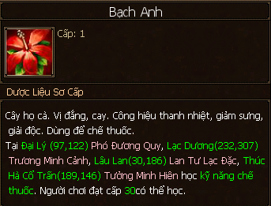
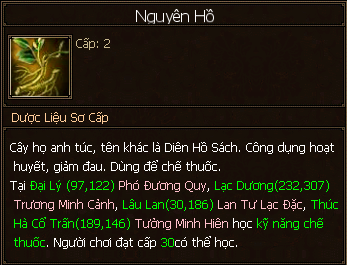
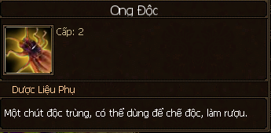
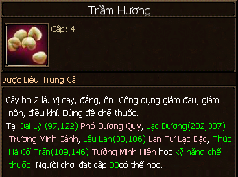
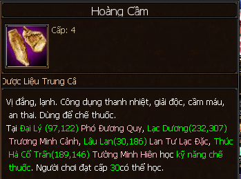
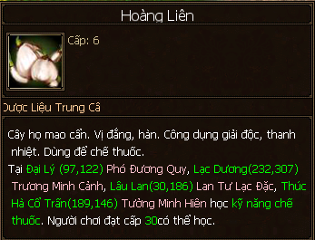
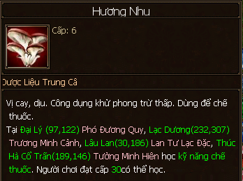
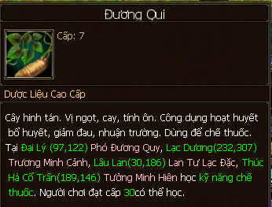
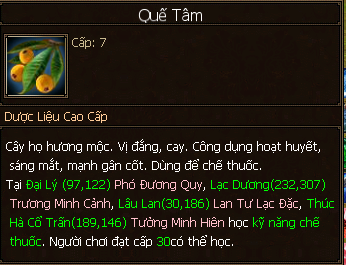
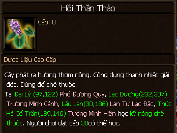

Hái Dược¶
- Hái dược đem về dược thảo chính là nguyên liệu cho kỹ năng Chế dược, ngoài ra còn thu được các dược thảo phụ (bán sinh) cần cho việc chế các dược phẩm hiếm, bên cạnh đó nó cũng là một phần nguyên liệu của kỹ năng chế dược phẩm của các môn phái.
- Mua liềm hái thuốc trong tiệm tạp hóa và dọn túi trước khi ra bản đồ hái dược nhé!
Học Nghề¶
- Có thể học ở các thành thị chính (chữ Ngư trên bản đồ) và nâng cấp về sau trong bang hội:
- Đại Lý: NPC Lưu Ký Nô (97, 128).
- Lạc Dương: NPC Khương Ngư (207, 184).
- Tô Châu: NPC Tưởng Bình (238, 77).
- Lâu Lan: NPC Sa Y Liên (34, 194).
Thăng Cấp¶
- Hái dược cho đủ điểm thành thạo của cấp hiện tại và liên hệ NPC để thăng cấp.
- Cấp 1 - 5: thăng cấp tại NPC dạy hái dược ở các thành chính, tiêu tốn vàng và kinh nghiệm.
- Cấp 5 - 10: NPC Chu Thế Hữu trong thành thị bang hội (129, 96; chữ Nông).
Phân Bố¶
| Cấp kỹ năng | Bản đồ | Dược liệu chính | Dược liệu phụ | Tiêu hao tinh lực/lần hái |
|---|---|---|---|---|
| 1 | Vô Lượng Sơn Kiếm Các Đôn Hoàng Kính Hồ Tung Sơn Thái Hồ |
Bạch Anh Bồ Hoàng 
|
Kiến 
|
3 |
| 2 | Tây Hồ | Xuyên Bối 
Nguyên Hồ  |
Ong Độc  |
4 |
| 3 | Nhĩ Hải | Cam Thảo 
Tỳ Bà 
Kim Ngân Hoa 
|
Ong Độc Tri Thù 
|
5 |
| 4 | Nhạn Nam | Trầm Hương Câu Kỷ 
Hoàng Cầm  |
Ngô Công 
|
6 |
| 5 | Long Tuyền | Phục Linh 
Thương Thuật 
Đỗ Trọng 
|
Hạt Tử 
|
7 |
| 6 | Thương Sơn | Hoàng Liên Hương Nhu Phòng Phong 
|
Thiềm Thử 
|
8 |
| 7 | Nhạn Bắc | Đương Qui Quế Tâm Hương Phụ 
|
Ngân Hoàn Xà 
|
9 |
| 8 | Võ Di | Hoắc Hương 
Thủ Ô 
Hồi Thần Thảo  |
Ngân Hoàn Xà | 10 |
| 9 | Thạch Lâm | Long Quì Tử 
Đông Trùng Hạ Thảo 
|
Trúc Diệp Thanh 
|
11 |
| 10 | Thảo Nguyên | Tượng Bối Nhân Sâm |
12 |
LingYun ghi chép lúc 22:26 29/7/2018